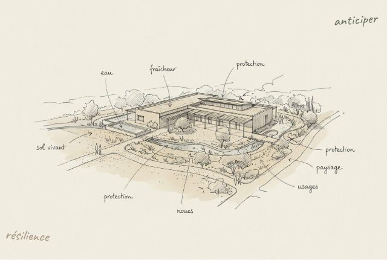
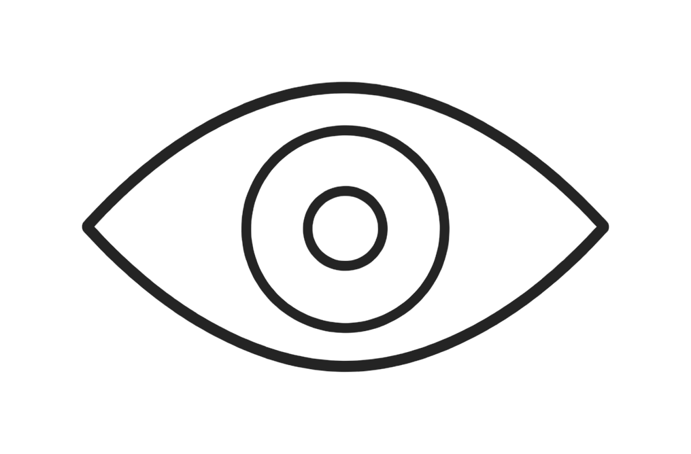
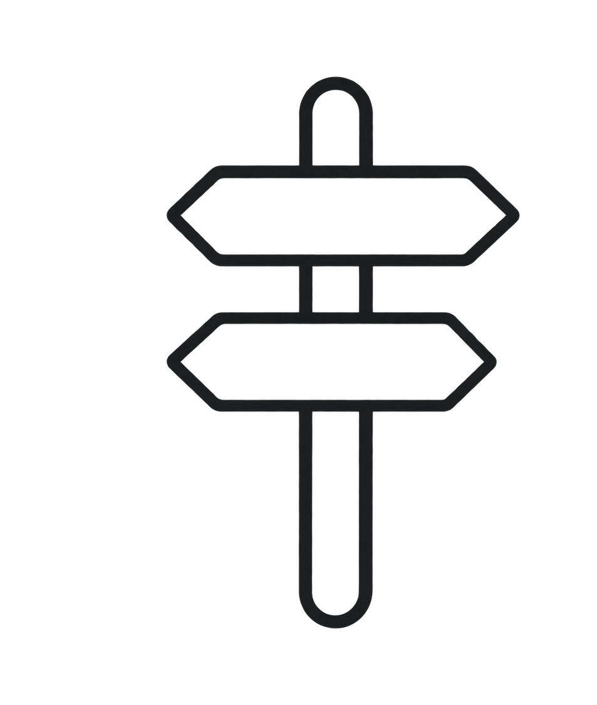
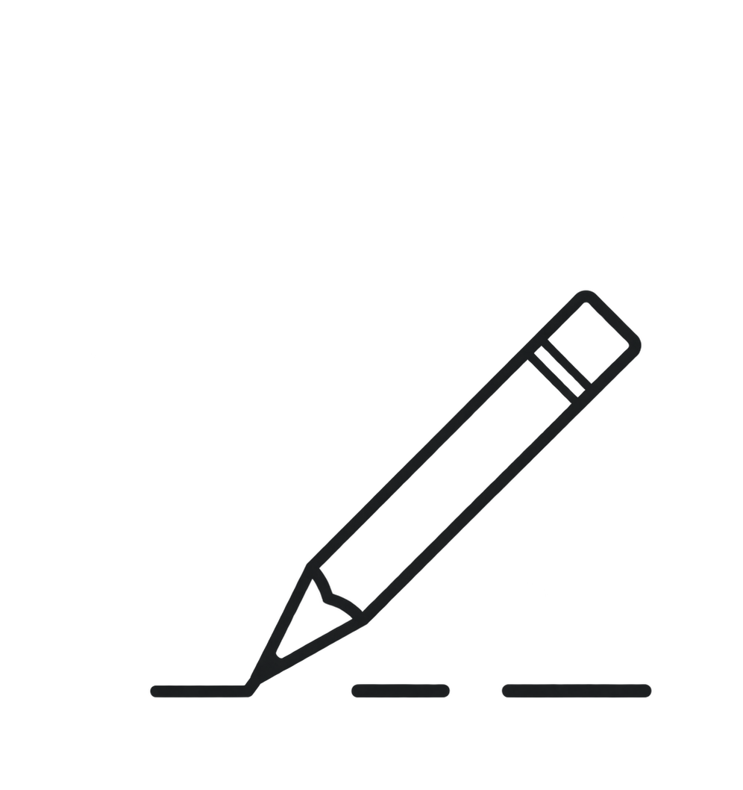
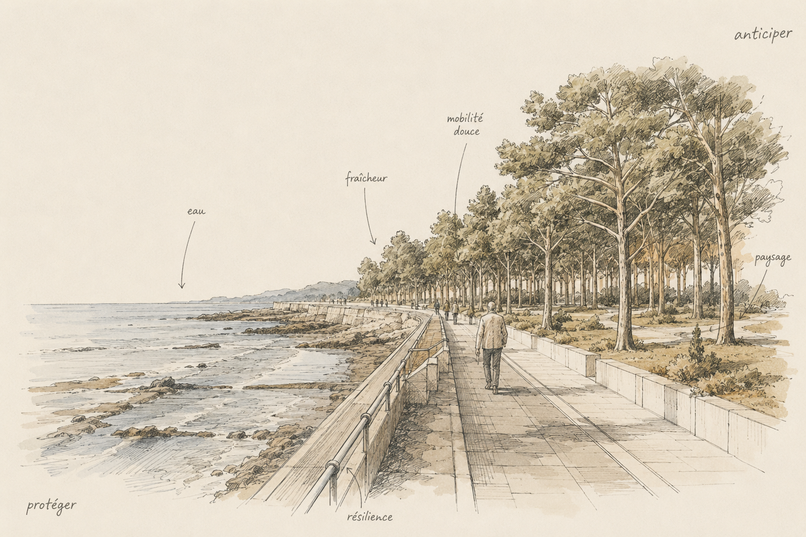
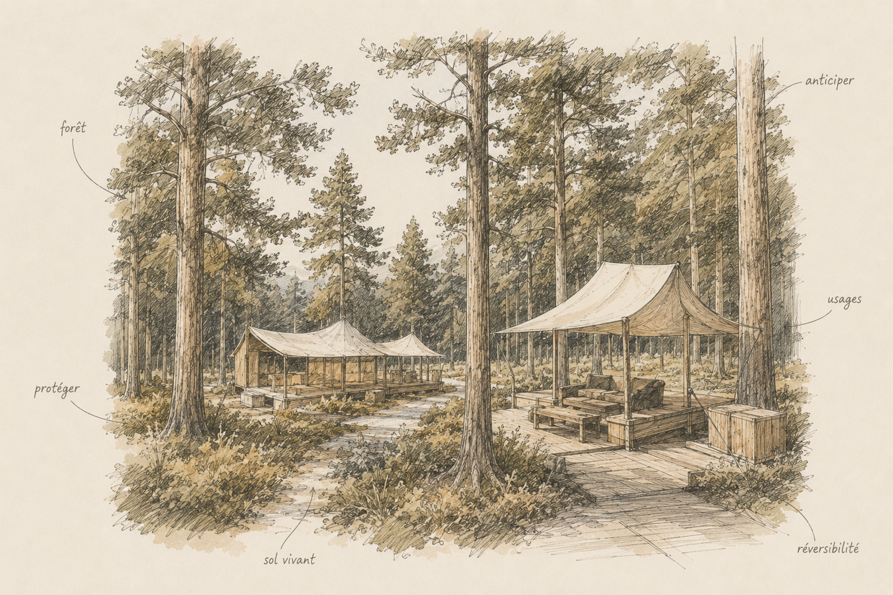
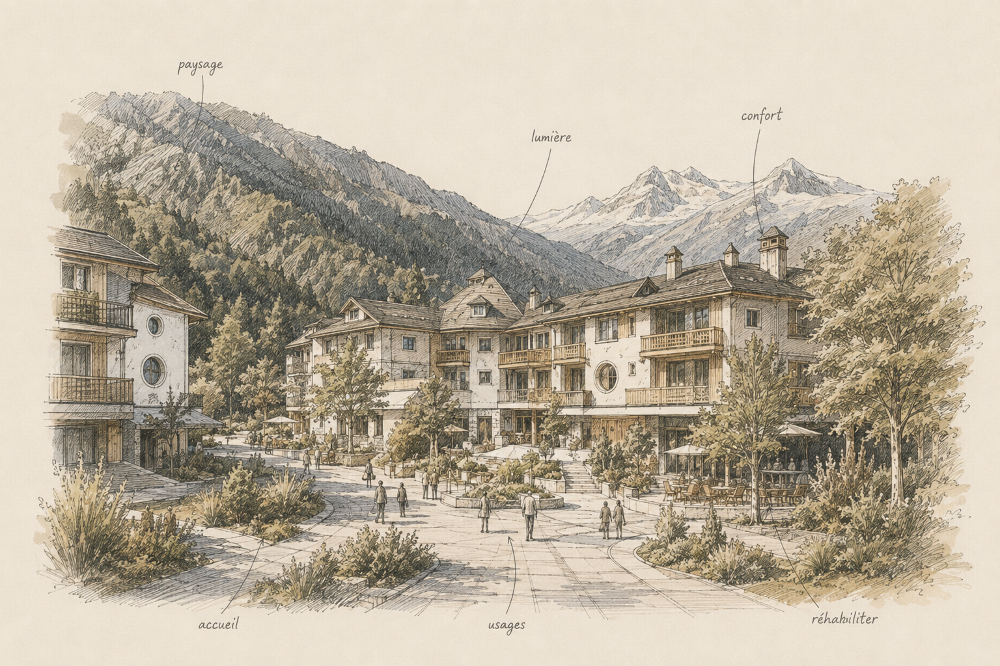

Feux de forêt
Prévenir les incendies
Architecture, paysage, interfaces forêt-habitat, accès et protection.
→Architecture · Conseil · Stratégie territoriale · Résilience climatique
SC DESIGN FRANCE accompagne entreprises, exploitants, investisseurs et collectivités dans la transformation de leurs bâtiments et de leurs territoires.
Avant de dessiner une solution, nous observons les usages, les vulnérabilités, les ressources et les évolutions à venir afin de déterminer ce qui mérite réellement d’être transformé.

Votre territoire
Chaque projet commence par une bonne question.
Feux de forêt
Architecture, paysage, interfaces forêt-habitat, accès et protection.
→Eau
Ruissellement, sols perméables, stockage, noues et adaptation des bâtiments.
→Chaleur
Ressource en eau, ombrage, végétation adaptée, confort d’été et sols vivants.
→Mutation
Transformer l’existant avant qu’il ne devienne obsolète ou inadapté.
→Décision
Clarifier les priorités avant d’engager les études et les travaux.
→Notre méthode
Une méthode simple pour révéler les vrais enjeux avant de dessiner les réponses.
Découvrir la méthode →
Regarder le territoire, les usages, les ressources, les contraintes et les vulnérabilités.
Croiser architecture, économie, climat, paysage et usages pour révéler le véritable enjeu.

Hiérarchiser les priorités et proposer des scénarios réalistes, sobres et efficaces.

Faire passer la stratégie dans le réel par l’architecture, le conseil et l’AMO.
Résilience
Le changement climatique ne crée pas seulement de nouvelles contraintes techniques. Il modifie notre manière d’habiter, de construire, d’aménager et d’investir.
SC DESIGN FRANCE transforme les risques — incendie, inondation, sécheresse, chaleur, submersion — en enjeux de projet, en lien avec les spécialistes techniques nécessaires.
Explorer notre approche →Projets

Tourisme & loisirs
Usages, programmation, identité, architecture et économie du projet.
→
Territoires
Lire le site, anticiper les mutations et construire une stratégie d’adaptation.
→
Hospitalité
Révéler le potentiel d’un patrimoine sans surinvestir.
→Notre conviction
Parfois, la première décision consiste à comprendre autrement la question.
Première étape
Vulnérabilités. Usages. Architecture. Climat. Ressources. Opportunités.
Un diagnostic court qui fait émerger les principaux enjeux et 3 à 5 orientations d’action.
Demander un Regard 2050Première étape
Présentez-nous votre territoire, votre bâtiment ou votre problématique.